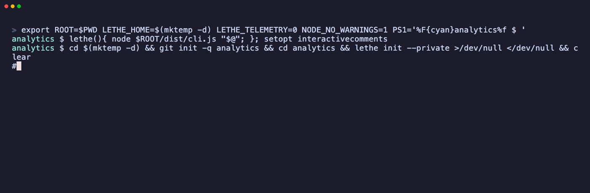

lethe
Memory for coding agents that forgets on purpose.
Install GitHubYour agent solved it on Tuesday. On Thursday, in a new session, it has no idea.
Every memory tool answers that by storing more. lethe stores less, better: it distils what happened into what is true, and throws the rest away.

Install
One line in Claude Code. Works in any host that speaks MCP.
claude mcp add lethe --scope user -- npx -y @alarv/lethe@latest mcp
Then check it: npx @alarv/lethe@latest doctor. Needs Node 22+.
opencode
{
"mcp": {
"lethe": {
"type": "local",
"command": ["npx", "-y", "@alarv/lethe@latest", "mcp"],
"enabled": true
}
}
}
Cursor · Windsurf · Zed
{
"mcpServers": {
"lethe": { "command": "npx", "args": ["-y", "@alarv/lethe@latest", "mcp"] }
}
}
Codex CLI
[mcp_servers.lethe] command = "npx" args = ["-y", "@alarv/lethe@latest", "mcp"]
Three kinds of memory
What happened. Raw, verbose, never leaves your machine.
What is true. Distilled from episodes, shareable.
How we do things here. Promoted once a claim has earned it.
And three things happen to them: consolidation distils episodes into claims off the latency path, forgetting decays and evicts the weakest first, and reconsolidation corrects a memory that turns out to be wrong.
Memory is text, in your repo
.lethe/memory/ a1b2c3d4-tests-need-containers.md e5f6a7b8-async-state-is-a-race.md
Readable, diffable, reviewable in a pull request. Your team sees what the agent learned before it becomes shared knowledge. If you delete lethe tomorrow, you keep the markdown.
Is it any good?
Honest answer: it is early. Retrieval is keyword search (BM25), and on our 24-task set it is roughly a draw against raw session logs. The evals are public and report where lethe loses.
| retrieval | raw MRR | compact MRR | precision |
|---|---|---|---|
| fts5 | 0.88 | 0.91 | 29% |
| recall (what the tool returns) | 0.88 | 0.86 | 67% |
Retrieval quality only, 24 tasks, 2026-10-22. The claim that matters — fewer turns and tokens on repeated tasks — is not yet measured. Full evals.
Isn't this what Claude Code's memory does?
Partly. Claude's auto memory is a notebook one person keeps on one machine, always loaded, zero setup. lethe is shared, reviewable, forgets, and works in any MCP host. They coexist. The comparison, including where Claude's is better.
Why a seahorse
Named for the river of forgetting. The seahorse is the hippocampus, where episodic memory is written before it is either consolidated or lost. Forgetting the incidental is the same operation as extracting the general rule. The full account.